Paleta de cores
Medida no navegador: fundos ponderados pela área ocupada, textos pela quantidade de caracteres. Destaques reúnem cores saturadas e fundos de botão.
Fundos
rgb(247, 247, 244)
rgb(22, 54, 43)
rgb(236, 237, 232)
rgb(10, 29, 23)
rgb(255, 255, 255)
rgb(247, 227, 153)
rgb(37, 211, 102)
Textos
rgb(191, 206, 199)
rgb(85, 99, 93)
rgb(255, 255, 255)
rgb(18, 33, 28)
rgb(211, 222, 216)
rgb(124, 140, 133)
Destaques
rgb(22, 54, 43)
rgb(247, 247, 244)
rgb(247, 227, 153)
rgb(138, 116, 19)
Gradientes
linear-gradient(rgba(10, 29, 23, 0), rgba(10, 29, 23, 0.9))linear-gradient(90deg, rgb(247, 227, 153) 0%, rgb(254, 243, 205) 50%, rgb(247, 227, 153) 100%)Tipografia
Escala usada (desktop 1440px)
| Tamanho | Peso | Família | Amostra |
|---|---|---|---|
| 48px | 600 | Cormorant Garamond | Texto de exemplo |
| 45px | 600 | Cormorant Garamond | Texto de exemplo |
| 38px | 600 | Cormorant Garamond | Texto de exemplo |
| 34px | 600 | Cormorant Garamond | Texto de exemplo |
| 31px | 600 | Cormorant Garamond | Texto de exemplo |
| 23px | 400 | Cormorant Garamond | Texto de exemplo |
| 21px | 600 | Cormorant Garamond | Texto de exemplo |
| 19px | 600 | Inter | Texto de exemplo |
| 18px | 400 | Cormorant Garamond | Texto de exemplo |
| 17px | 400 | Inter | Texto de exemplo |
Mobile (390px): 30px/600, 29px/600, 25px/600, 24px/600, 21px/600, 19px/400, 17px/400, 17px/600 · H1 no mobile: 30px
Tags
| Tag | Família | Tamanho | Peso | Altura de linha | Espaçamento | Caixa | Cor |
|---|---|---|---|---|---|---|---|
| <h1> | Cormorant Garamond | 45px | 600 | 49.5px | 0.225px | none | #FFFFFF |
| <h2> | Cormorant Garamond | 48px | 600 | 54.72px | 0.24px | none | #12211C |
| <h3> | Cormorant Garamond | 38px | 600 | 42.56px | 0.19px | none | #12211C |
| <p> | Inter | 15px | 400 | 26.25px | normal | none | #BFCEC7 |
Botões
Recriados com os estilos computados reais. Efeitos de hover e animação não aparecem aqui; veja a seção de animações.
fundo #00000000 · texto #FFFFFF · raio 0px · padding 24px 0px · 23px/400 none · 6x na páginafundo #00000000 · texto #0A1D17 · raio 12px · padding 21px 44px · 17px/600 none · 4x na páginafundo #16362B · texto #FFFFFF · raio 12px · padding 21px 44px · 17px/600 none · 4x na páginafundo #F7F7F4 · texto #12211C · raio 12px · padding 17px 20px · 15px/400 none · 4x na páginafundo #00000000 · texto #0A1D17 · raio 12px · padding 18px 38px · 16px/600 none · 2x na páginaCards e containers
RESULTADO DE CIRURGIA DE MAMAS
raio 12px · sombra none · borda 1px solid rgb(226, 228, 222) · 300x377pxMamas flácidas e caídas Mamas flácidas e caídas destroem sua autoestima, fazendo com que v
raio 12px · sombra none · borda 1px solid rgba(255, 255, 255, 0.11) · 364x343pxEtapa 01 Consulta Inicial Detalhada Avaliação completa das suas necessidades, objetivos e
raio 12px · sombra rgba(10, 29, 23, 0.05) 0px 10px 30px 0px · borda 1px solid rgb(226, 228, 222) · 441x297pxASSISTIR NO INSTAGRAM
raio 12px · sombra none · borda 0px none rgb(18, 33, 28) · 365x649pxBordas, raios e sombras
Sombras
rgba(10, 29, 23, 0.2) 0px 12px 30px 0pxrgba(10, 29, 23, 0.16) 0px 12px 30px 0pxrgba(10, 29, 23, 0.05) 0px 10px 30px 0pxrgba(10, 29, 23, 0.07) 0px 24px 60px 0pxEspaçamentos
- Largura do conteúdo mais comum: -px
- Padding vertical das seções (topo/base): 92px/92px (9x), 0px/0px (1x), 92px/0px (1x)
- Gaps mais usados (flex/grid): 20px, 14px, 11px, 60px, 34px, 86px
- Altura total da página: 15893px em 11 seções
Estrutura e ritmo de cores das seções
Cada faixa é uma seção de topo, com altura proporcional e a cor ou imagem de fundo real.
Animações, ícones e bibliotecas
- Keyframes próprios: fade, marquee
- Animações de entrada do Elementor: nenhuma
- Classes de scroll reveal da casa: nenhuma
- Ícones: 40 SVG, 0 ícones de fonte
- Bibliotecas e tags detectadas: ga4, gtm
Snippets da biblioteca presentes nesta página
- Nenhum snippet da biblioteca identificado.
Imagens do site
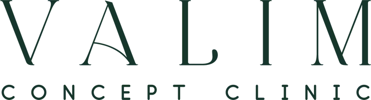
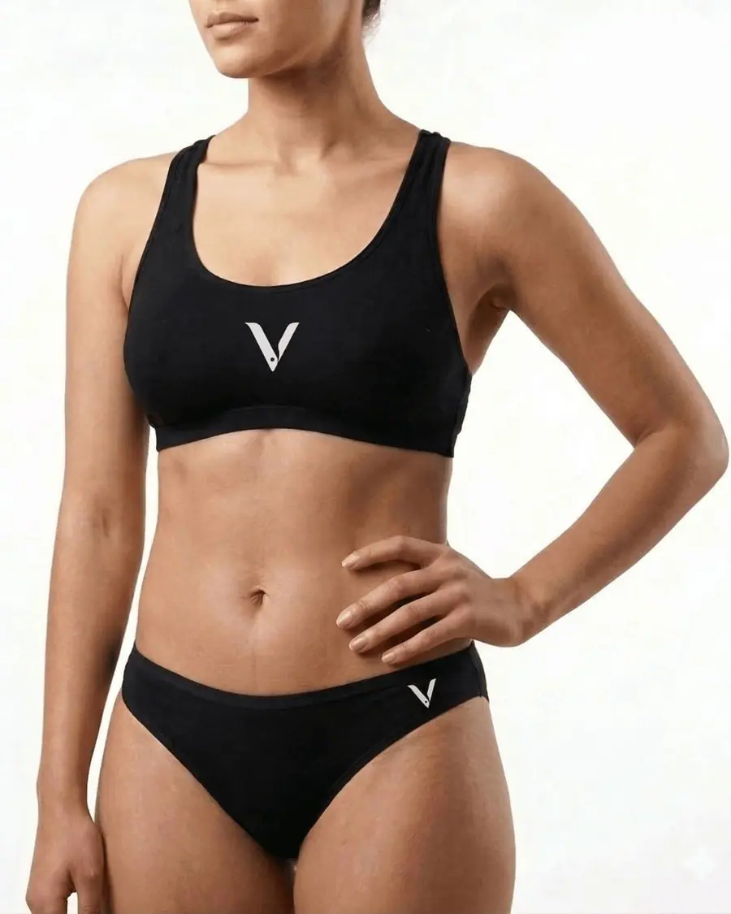
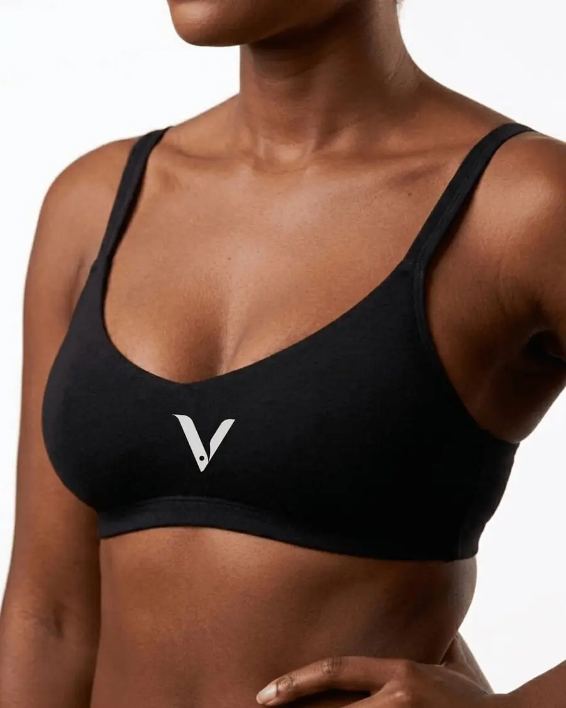
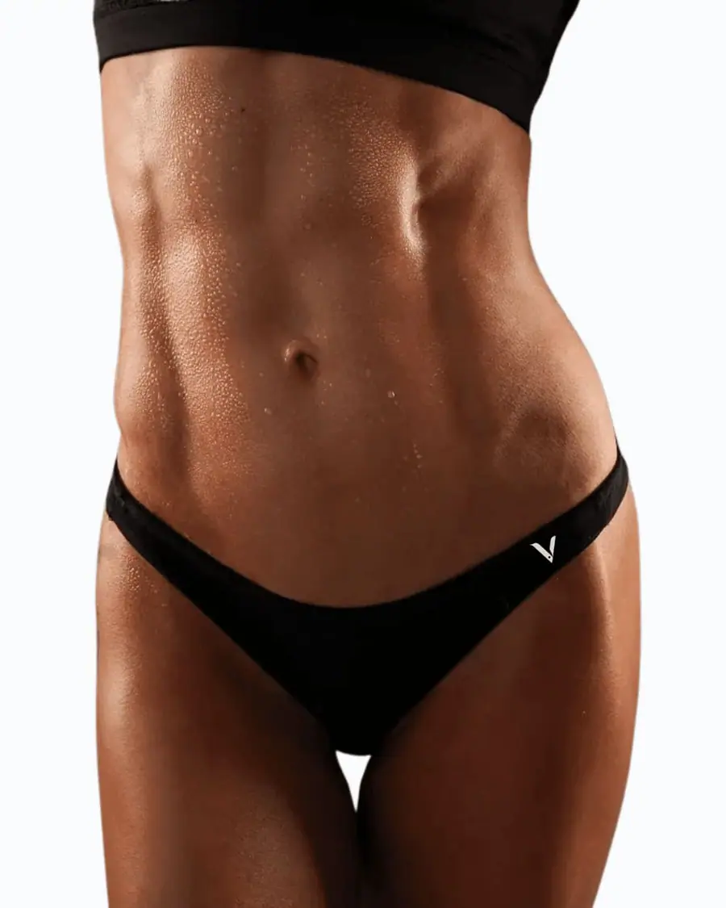
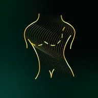
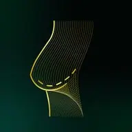
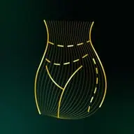
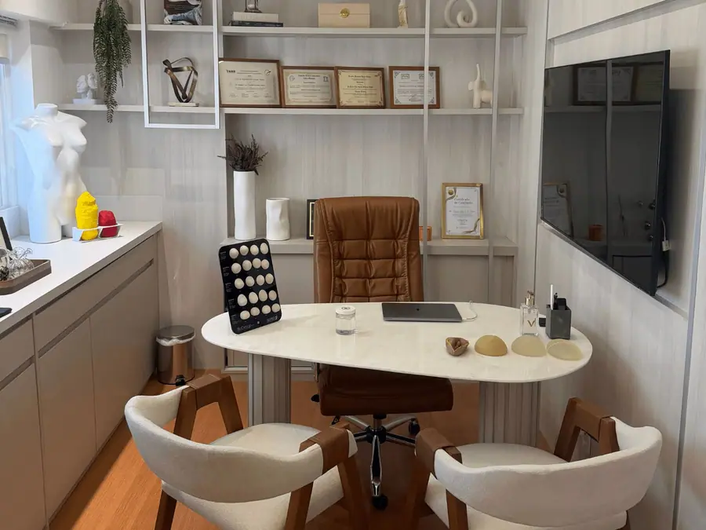
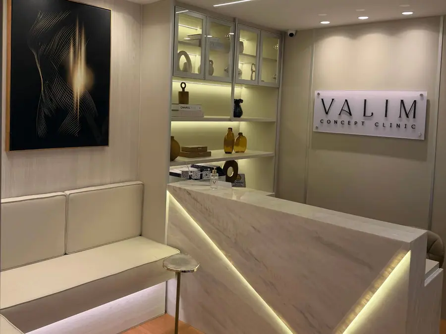
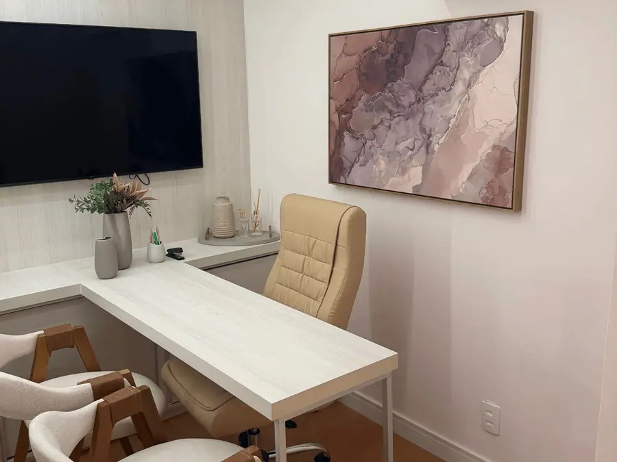
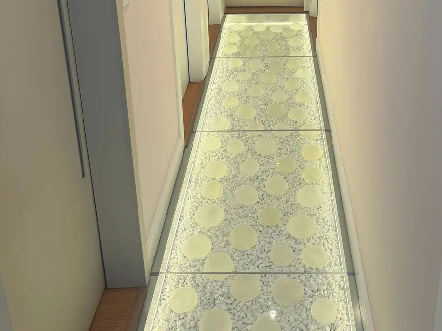
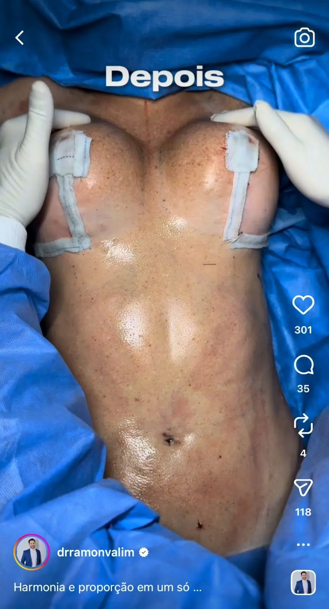
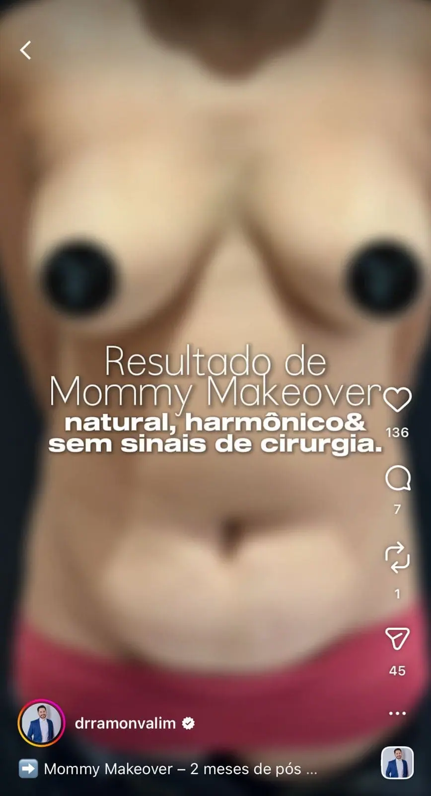